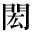
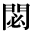
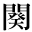

●島崎藤村『藁草履』
|  | 1_93_46.gif |
●内藤湖南『尚書稽疑』 |
|  | 1_93_47.gif |
●内藤湖南『禹貢製作の時代』 ●内藤湖南『支那歴史的思想の起源』 |
| 1_93_49.gif |
●桑原隲蔵『秦始皇帝』 ●桑原隲蔵『大師の入唐』 ●桑原隲蔵『歴史上より観たる南支那の開発』 |
|
| 1_93_51.gif |
●芥川龍之介『秋山図』 |
|
| 1_93_52.gif |
●夏目漱石『草枕』 |
|
|  | 1_93_53.gif |
●泉鏡花『義血侠血』 ●中島敦『李陵』 |
| 1_93_54.gif |
●内田魯庵『灰燼十万巻（丸善炎上の記）』 ●小栗虫太郎『人外魔境 天母峰』 ●桑原隲蔵『東漢の班超』 ●幸田露伴『水の東京』 ●宮沢賢治『インドラの網』 |
|
| 1_93_55.gif |
●芥川龍之介『湖南の扇』 |
|
|
2_91_57.gif |
●島崎藤村『旧主人』 ●島崎藤村『藁草履』 |
| gaiji001.gif |
●石川啄木『雪中行 小樽より釧路まで』 ●嘉村礒多『崖の下』 |